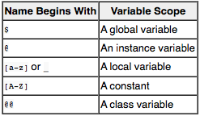

Variable Scope
Technical Blog
Sunday, August 16, 2015
The following are the different kinds of variables in Ruby:

Global Variables
Global variables in Ruby are accessible from anywhere in the Ruby program, regardless of where they are declared. Global variable names are prefixed with a dollar sign ($). For example:
$welcome = "Hello there!"
Use of global variables is strongly discouraged. The problem with global variables is that, not only are they visible anywhere in the code for a program, they can also be changed from anywhere in the application. This can make tracking bugs difficult.
Instance Variables
Instance variables are similar to Class variables except that their values are local to specific instances of an object. Other objects of the same class have their own local copies of the variable which are independent of changes made in any other objects.
Instance variables are declared in Ruby by prefixing the variable name with a single @ sign:
@total = 10
Local Variables
Local variables are local to the code construct in which they are declared. For example, a local variable declared in a method or within a loop cannot be accessed outside of that loop or method. Local variable names must begin with either an underscore or a lower case letter. For example:
total = 10
_Total = 20
Constant Scope
Ruby constants are values which, once assigned a value, should not be changed. Constants declared within a class or module are available anywhere within the context of that class or module. Constants declared outside of a class or module are assigned global scope.
Class Variables
A class variable is a variable that is shared amongst all instances of a class. This means that only one variable value exists for all objects instantiated from this class. It also means that if one object instance changes the value of the variable, that new value will essentially change for all other object instances.
Class variables are declared by prefixing the variable name with two @ characters (@@). Class variables must be initialized at creation time. For example:
@@total = 20